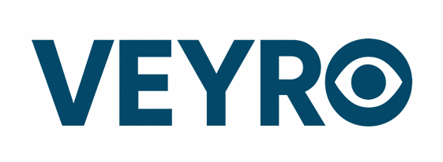
Plataforma de seguridad urbana basada en IA.
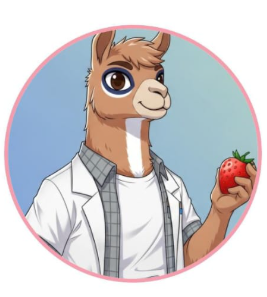
Detección de clorpirifos en fresas con sensor AS7343.
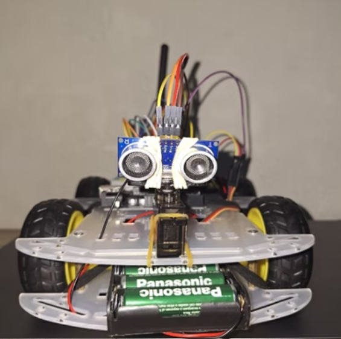
Robot autónomo para exploración y análisis.
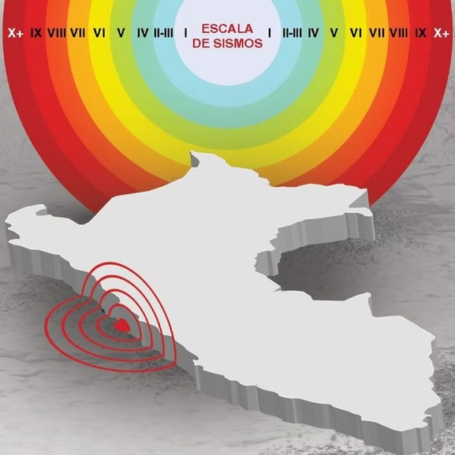
Plataforma interactiva para visualizar sismos en tiempo real.
VEYRO es una plataforma interactiva que permite monitorear tráfico, cámaras de seguridad y reportes ciudadanos en tiempo real. Utilizando herramientas avanzadas de visualización como mapas dinámicos, alertas inteligentes y gráficos de afluencia, su objetivo es ofrecer información clara y precisa para mejorar la seguridad y la toma de decisiones en la movilidad urbana.
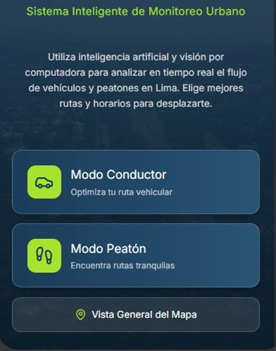
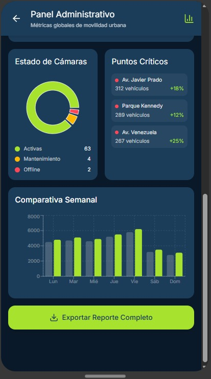
Consiste en desarrollar un sistema portátil...
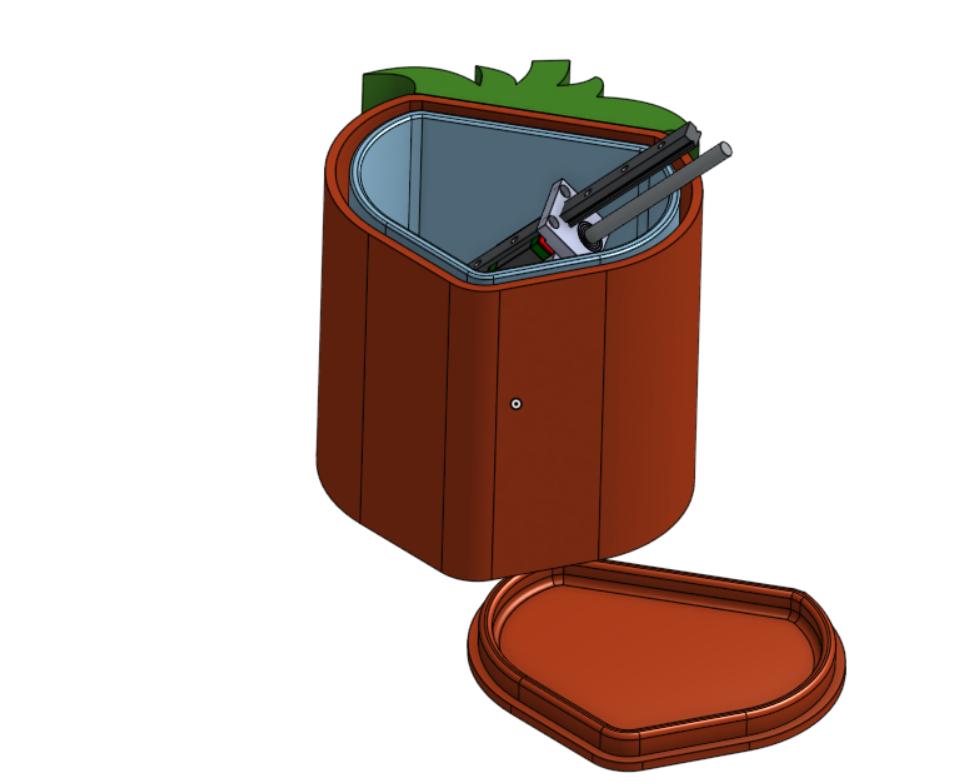
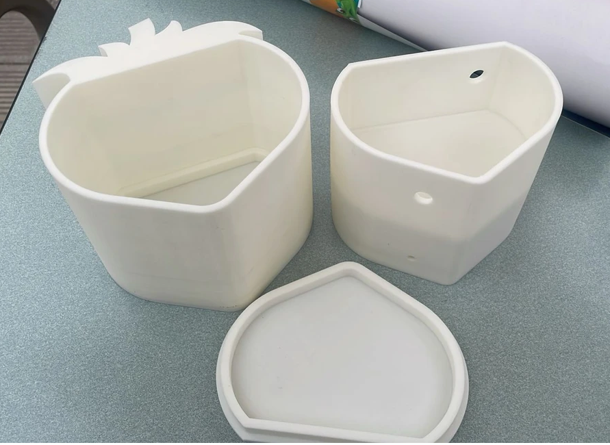
Desarrollo de un Robot Explorador para la Evaluación de Zonas de Riesgo y Emergencia en el Perú.
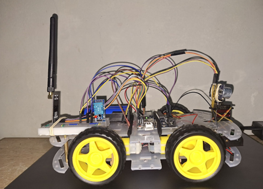
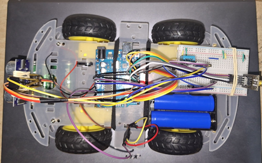
Este proyecto presenta un análisis interactivo de los sismos ocurridos en el Perú entre 1960 y 2023, utilizando herramientas de visualización avanzadas como gráficos dinámicos y mapas interactivos. El objetivo principal es facilitar la exploración de datos sísmicos para comprender patrones, tendencias y regiones más afectadas.
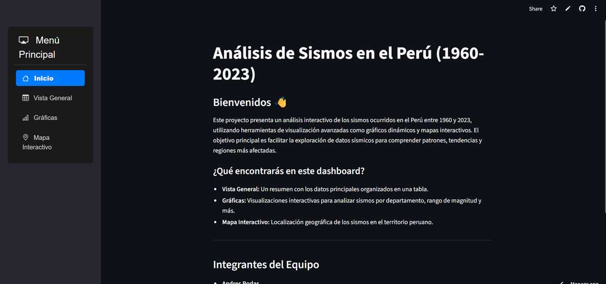
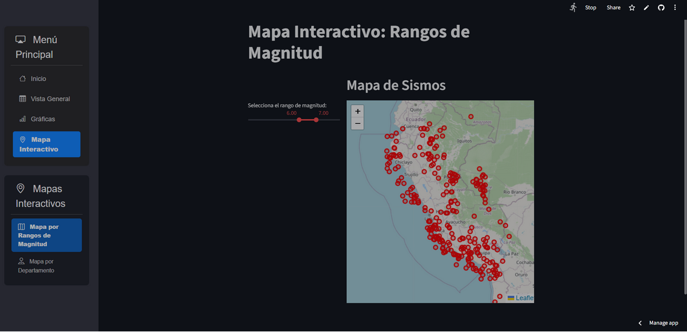